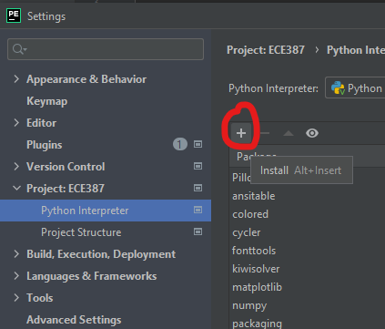

❄️ ICE2: Containers & Numpy#
Purpose#
This in-class exercise (ICE) will introduce Python data containers, such as lists, tuples, and strings. It will also introduce NumPy, a fundametal package for scientific computing in Python.
Strings, Lists, Tuples, and Dictionaries#
Reference: D. Beazley, Python Essential Reference, 4th ed, Addison Wesley, 2009
Strings#
To create string literals, enclose them in single, double, or triple quotes as follows
a = "Hellow World"
b = 'Python is groovy'
c = """Computer says 'No'"""
print(a)
print(b)
print(c)
Hellow World
Python is groovy
Computer says 'No'
The same type of quote used to start a string must be used to terminate it. Triple-quoted strings capture all the text that appears prior to the terminating triple quote, as opposed to single- and double-quoted strings, which must be specified on one logical line. Triple-quoted strings are useful when the contents of a string literal span multiple lines of text such as the following:
print('''Content-type: text/html
<h1> Hello World </h1>
Click <a href="http://www.python.org">here</a>.
''')
Strings are stored as sequences of characters indexed by integers starting at zero
a = "Hello World"
print(a[4])
print(a[:5])
print(a[6:])
print(a[3:8])
o
Hello
World
lo Wo
x = "37"
y = "42"
z = x+y
print(z) # what does this print? why?
z = int(x)+int(y)
print(z) # what does this print?
3742
79
Lists#
Lists are sequences of arbitrary objects. You create a list by enclosing values in square brackets, as follows:
names = ["Dave", "Mark", "Ann", "Phil"]
print(names)
['Dave', 'Mark', 'Ann', 'Phil']
Lists are indexed by integers, starting with zero. Use the indexing operator to access and modify individual items of the list:
a = names[2]
print(a)
names[0] = "Jeff"
names.append("Paula")
names.insert(2, "Thomas")
print(names)
Ann
['Jeff', 'Mark', 'Thomas', 'Ann', 'Phil', 'Paula']
Lists can be sliced:
x[start:stop:stride]
b = names[0:2]
print(b)
c = names[2:]
print(c)
names[1] = 'Jeff'
print(names)
names[0:2] = ['Dave', 'Mark', 'Jeff']
print(names)
['Jeff', 'Mark']
['Thomas', 'Ann', 'Phil', 'Paula']
['Jeff', 'Jeff', 'Thomas', 'Ann', 'Phil', 'Paula']
['Dave', 'Mark', 'Jeff', 'Thomas', 'Ann', 'Phil', 'Paula']
Use the plus + operator to concatenate lists:
a = [1,2,3]+[4,5,6]
print(a)
[1, 2, 3, 4, 5, 6]
An empty list can be created bin one of two ways
names = []
print(names)
names = list()
print(names)
[]
[]
Lists can contain any kind of Python object, including other lists, as in the following example:
a = [1, "Dave", 3.14, ["Mark", 7, 9, [0, 101]], 10]
Items contained in nested lists are accessed by applying more than one indexing operation, as follows:
print(a[1])
print(a[3])
print(a[3][1])
print(a[3][3][1])
Objects can be inserted and appended to a list.
# List methods (insert)
list_b.insert(2,'python')
print(list_b)
# List methods (append)
list_b.append('.')
print(list_b)
Tuples#
To create sinple data structures, you can pack a collection of values together into a single object using a tuple. You can create a tuple by enclosing group of values in parentheses like this:
stock = ("GOOG", 100, 490.10)
address = ('www.python.org', 80)
person = ("Stan", "Baek", "stanley.baek@afacademy")
Python often recognizes that a tuple is intended enve if the parentheses are missing
stock = "GOOG", 100, 490.10
address = 'www.python.org', 80
person = "Stan", "Baek", "stanley.baek@afacademy"
For completeness, 0- and 1-element tuples can be defined, but have special syntax:
a = () # 0-tuple, empty tuple
b = (1,) # 1-tuple
c = 1, # 1-tuple
print(type(a))
print(type(b))
print(type(c))
b = (1)
c = 1
print(type(b))
print(type(c))
<class 'tuple'>
<class 'tuple'>
<class 'tuple'>
<class 'int'>
<class 'int'>
The values in a tuple can be extracted by numerical index just like a list. However, it is more common to unpack tuples into a set of variables like this
name, shares, price = stock
host, port = address
first_name, last_name, phone = person
Although tuples support most of the same operations as lists, such as indexing, slicing, and concatenation, the contents of a utple cannot be modified after creation. That is, you cannot replace, delete, or append new elements to an exisiting tuple.
print(stock[1])
stock[1] = 200 # error
100
---------------------------------------------------------------------------
TypeError Traceback (most recent call last)
Input In [16], in <module>
1 print(stock[1])
----> 2 stock[1] = 200
TypeError: 'tuple' object does not support item assignment
Dictionaries#
In Python, a dictionary (or dict) is mapping between a set of indices (keys) and a set of values
The items in a dictionary are key-value pairs
Keys can be any Python data type
Dictionaries are unordered
# Dictionaries
eng2sp = {}
eng2sp['one'] = 'uno'
print(eng2sp)
{'one': 'uno'}
eng2sp = {'one': 'uno', 'two': 'dos', 'three': 'tres'}
print(eng2sp)
{'one': 'uno', 'two': 'dos', 'three': 'tres'}
# keys vs values
print(eng2sp.keys())
print(eng2sp.values())
dict_keys(['one', 'two', 'three'])
dict_values(['uno', 'dos', 'tres'])
NumPy#
NumPy’s main object is the homogeneous multidimensional array. It is a table of elements (usually numbers), all of the same type. In NumPy dimensions are called axes.
For example, the array for the coordinates of a point in 3D space, [1, 2, 1], has one axis. That axis has 3 elements in it, so we say it has a length of 3. In the example pictured below, the array has 2 axes. The first axis has a length of 2, the second axis has a length of 3.
[[1., 0., 0.],
[0., 1., 2.]]
Reference: https://numpy.org/doc/stable/user/quickstart.html
Installing NumPy System-wide#
Open Windows Terminal and run
pip install numpy
If it returns an error message similar to
WARNING: You are using pip version 21.3.1; however, version 22.0 is available.
You should consider upgrading via the 'c:\program files\python38\python.exe -m pip install --upgrade pip' command.
run
python.exe -m pip install --upgrade pip
Installing NumPy for PyCharm Projects#
Open Your PyCharm project. Then, go to File > Settings > Project > Python Interpreter. Click + as shown below

Search for numpy and choose the numpy package. Click Install Package at the bottom. Once the installation is complete, it will display Package 'numpy' installed successfully. Close the window. numpy should be on the intalled packages list.
In the future, you need to run the same procedure to install packages in PyCharm. The packages we need include spatialmath-python, matplotlib, roboticstoolbox-python, and opencv-python.
Creating Array#
You can create an array from a regular Python list or tuple using the array function. The type of the resulting array is deduced from the type of the elements in the sequences.
import numpy as np
a = np.array([2, 3, 4])
print(type(a))
print(a.dtype)
b = np.array([1.2, 3.5, 5.1])
print(type(b))
print(b.dtype)
A frequent error consists in calling array with multiple arguments, rather than providing a single sequence as an argument
a = np.array(1, 2, 3, 4) # WRONG
Traceback (most recent call last):
...
TypeError: array() takes from 1 to 2 positional arguments but 4 were given
a = np.array([1, 2, 3, 4]) # RIGHT
np.array transforms sequences of sequences into two-dimensional arrays, sequences of sequences of sequences into three-dimensional arrays, and so on.
b = np.array([(1.5, 2, 3), (4, 5, 6)])
print(b)
print(b[0])
print(b[0][0])
print(b[0,0])
The function np.zeros creates an array full of zeros, the function ones creates an array full of ones, and the function empty creates an array whose initial content is random and depends on the state of the memory. By default, the dtype of the created array is float64, but it can be specified via the key word argument dtype.
a = np.zeros((2, 6))
print(a)
b = np.ones((2, 3, 4), dtype=np.int16)
print(b)
c = np.empty((4, 5))
print(c)
To create sequences of numbers, NumPy provides the arange function which is analogous to the Python built-in range, but returns an array.
a = np.arange(10, 30, 5)
print(a)
b = np.arange(0, 2, 0.3)
print(b)
When arange is used with floating point arguments, it is generally not possible to predict the number of elements obtained, due to the finite floating point precision. For this reason, it is usually better to use the function linspace that receives as an argument the number of elements that we want, instead of the step:
a = np.linspace(0, 2, 9) # 9 numbers from 0 to 2
print(a)
b = np.linspace(0, 2 * np.pi, 100) # useful to evaluate function at lots of points
print(b)
Basic Operations#
Arithmetic operators on arrays apply elementwise. A new array is created and filled with the result.
a = np.array([20, 30, 40, 50])
print(a)
b = np.arange(4)
print(b)
c = a - b
print(c)
d = b**2
print(d)
e = 10 * np.sin(a)
print(e)
print(a < 35)
IMPORTANT
Unlike in many matrix languages, the product operator * operates elementwise in NumPy arrays. The matrix product can be performed using the @ operator (in python >=3.5) or the dot function or method:
A = np.array([[1, 1],
[0, 1]])
B = np.array([[2, 0],
[3, 4]])
print(A*B) # elementwise product
print(A@B) # matrix product
print(np.matmul(A,B)) # matrix product
print(A.dot(B)) # matrix product
Some operations, such as += and *=, act in place to modify an existing array rather than create a new one.
rg = np.random.default_rng(1) # create instance of default random number generator
a = np.ones((2, 3), dtype=int)
print(a)
b = rg.random((2, 3))
print(b)
a *= 3
print(a)
b += a
print(b)
a += b # b is not automatically converted to integer type
IMPORTANT
A Python list cannot directly handle a mathematical operations, while numpy array can. This is one of the main differences between a list and array. While you can store an integer or float in a list, you can’t really do mathematical operations in it.
import numpy as np
a = np.array([1,2,3]) # np array
print(a+a)
print(a*3)
print(a**2)
b = [1,2,3] # python list
print(b+b)
print(b*3)
print(b**2) # Error
[2 4 6]
[3 6 9]
[1 4 9]
[1, 2, 3, 1, 2, 3]
[1, 2, 3, 1, 2, 3, 1, 2, 3]
---------------------------------------------------------------------------
TypeError Traceback (most recent call last)
<ipython-input-2-4bf234c89ddd> in <module>
8 print(b+b)
9 print(b*3)
---> 10 print(b**2) # Error
TypeError: unsupported operand type(s) for ** or pow(): 'list' and 'int'
Indexing, Slicing and Iterating#
One-dimensional arrays can be indexed, sliced and iterated over, much like lists and other Python sequences.
a = np.arange(10)**3
print(a)
print(a[2])
print(a[1:3])
print(a[1:])
print(a[:4])
print(a[-4:-2])
print(a[1:5])
print(a[1:5:2])
print(a[1:5:1])
# equivalent to a[0:6:2] = 1000;
# from start to position 6, exclusive, set every 2nd element to 1000
a[:6:2] = 1000
print(a)
b = a[::-1] # reversed a
print(b)
for i in b:
print(i**(1/3))
[ 0 1 8 27 64 125 216 343 512 729]
8
[1 8]
[ 1 8 27 64 125 216 343 512 729]
[ 0 1 8 27]
[216 343]
[ 1 8 27 64]
[ 1 27]
[ 1 8 27 64]
[1000 1 1000 27 1000 125 216 343 512 729]
[ 729 512 343 216 125 1000 27 1000 1 1000]
8.999999999999998
7.999999999999999
6.999999999999999
5.999999999999999
5.0
9.999999999999998
3.0
9.999999999999998
1.0
9.999999999999998
Examples of two-dimensional arrays are
arr2 = np.array([[1,2,3,4,5],[6,7,8,9,10]])
print(arr2)
print(arr2[1,:])
print(arr2[:,1])
print(arr2[1,1:4])
[[ 1 2 3 4 5]
[ 6 7 8 9 10]]
[ 6 7 8 9 10]
[2 7]
[7 8 9]
NumPy manipulation routines#
There are a number of functions for array manipulation. Let’s take look at a few of them. A complete list can be found in the reference below.
Reference: https://numpy.org/doc/stable/reference/routines.array-manipulation.html
import numpy as np
x = np.array([[1,2,3],[4,5,6]])
print(x)
print(np.shape(x)) # returns the array shape which is the same as matrix dimension
print(x.shape) # shape is a properity of numpy.array
# we can change the array shape
y = np.reshape(x,[3,2])
print(y)
print(y.shape) # array shape
# flatten an array
z = x.flatten()
print(z)
print(z.shape)
# transpose
y = x.T # matrix transpose of x
print(y)
z = np.transpose(x) # same as x.T
print(z)
y = np.insert(x, [1], [[3,4,5]], axis=0) # axis = 0 means the row
print(y)
z = np.insert(x, [1], [[3],[4]], axis=1) # axis = 0 means the column
print(z)
y = np.fliplr(x) # reverse the order elements along the row axis (or reverse left and right)
y = np.flipud(x) # reverse the order elements along the col axis (or reverse up and down)
a = np.arange(9).reshape(3, 3)
print(a)
b = np.diagonal(a) # get the diagonal elelments
print(b)
c = np.fliplr(a).diagonal() # fliplr and then get the diagonal elements
print(c)
d = np.flipud(a).diagonal() # flipup and then get the diagonal elements
print(d)
numpy.linalg#
Since matrix can be easily represented by a NumPy array, NumPy contains a linalg submodule that provides various linear algebra functions.
Reference: https://numpy.org/doc/stable/reference/routines.linalg.html#module-numpy.linalg
import numpy as np
from numpy import linalg
A = np.array([[1,2],[3,4]])
print(A)
print(linalg.det(A)) # determinant of A
B = linalg.inv(A) # inverse of A
print(B)
w, v = linalg.eig(A) # eigen values and normalized eigenvectors
print(w)
print(v) # each column of v is a normlized eigenvector associated with w in the same order.
[[1 2]
[3 4]]
-2.0000000000000004
[[-2. 1. ]
[ 1.5 -0.5]]
[-0.37228132 5.37228132]
[[-0.82456484 -0.41597356]
[ 0.56576746 -0.90937671]]
Logic Functions#
Reference: https://numpy.org/doc/stable/reference/routines.logic.html
x = np.array([0,1,1]) # x is a numpy array
print(x == 0) # check if each element is zero
print(np.all(x==0)) # check if all elements are zero
print(np.any(x==0)) # check if any elemnent is zero
print((x==0).all()) # check if all elements are zero
print((x==0).any()) # check if any elemnent is zero
y=[0,1,1] # y is a list
print(np.all(y==0)) # np.all() takes a list argument
print((y==0).all()) # a list object does not have all() method.
[ True False False]
False
True
False
True
False
---------------------------------------------------------------------------
AttributeError Traceback (most recent call last)
Input In [21], in <module>
7 y=[0,1,1] # y is a list
8 print(np.all(y==0)) # np.all() takes a list argument
----> 9 print((y==0).all())
AttributeError: 'bool' object has no attribute 'all'
Deliverable#
Deliverable 1#
Complete the check_game function in tictactoe.py. Comment your code and push it to your repository.